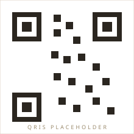

Akad Nikah
Sabtu, 12 Juni 2027 · 08.00 – 10.00 WIB
Masjid Agung Al-Azhar
Jl. Sisingamangaraja, Jakarta Selatan
Walimatul 'Urs
Kepada Yth.
Bapak Dimas Anggara
بِسْمِ اللّٰهِ الرَّحْمٰنِ الرَّحِيْمِ
Assalamu'alaikum Warahmatullahi Wabarakatuh
Sabtu, 12 Juni 2027
Dengan memohon rahmat dan ridha Allah Subhanahu wa Ta'ala, kami bermaksud menyelenggarakan walimatul 'ursy putra-putri kami.
[ Ayat / doa pernikahan diisi dari sumber terverifikasi oleh pemilik ]
QS. Ar-Rum : 21
Putri dari Bapak & Ibu Hakim
Putra dari Bapak & Ibu Ramadhan
Sabtu, 12 Juni 2027 · 08.00 – 10.00 WIB
Masjid Agung Al-Azhar
Jl. Sisingamangaraja, Jakarta Selatan
Sabtu, 12 Juni 2027 · 11.00 – 14.00 WIB
Aula Ar-Rahman
Jl. Masjid Raya No. 1, Jakarta Selatan
Menuju Hari Bahagia
D − 120

Mohon konfirmasi sebelum 30 Mei 2027.
Dimas Anggara
Barakallahu lakuma, semoga menjadi keluarga sakinah mawaddah warahmah.
Sarah Melati
Turut berbahagia, semoga Allah berkahi pernikahan kalian.